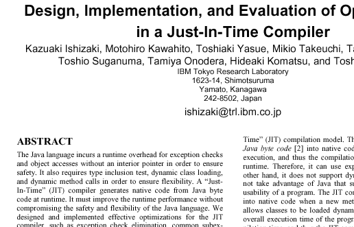

Background Information |
|
In order to render a glyph to a given character size, the outline is scaled from the master space to the device space using a simple scaling transform. This scaled outline can then be converted into a monochrome bitmap, or an anti-aliased one. However, such glyphs displayed on a low-resolution surface will often show numerous unpleasant artifacts. Here is an example of simply-scaled text : As you can see, this text suffers from the following symptoms:
Grid-FittingGrid-Fitting is the general process of modifying glyph outlines in order to align some of their important features to the pixel grid in device space. When done correctly, the quality of the final glyph bitmaps is massively improved. Here is an example of the same text with all glyph outlines grid-fitted by a TrueType renderer: The difference is indeed striking. HintingGrid-fitting can be decomposed in two important phases :
Traditionally, Feature Detection is performed when the font file is created. The hints produced can be stored in many different ways by what is called the hinter, which can be a program, a font designer or a combination of both (i.e. program computed hints + hand-edited ones). The final renderer performs the alignment control given the hints provided in the font file. The advantage is that the hints can be very accurate and describe very precisely the features and the way they should be grid-fitted. For example, the TrueType format simply creates a bytecoded program for each glyph outline that is interpreted on the final renderer. The bytecode used is a complete virtual processor, specialized in geometric operations. On the other hand, the Type 1 format uses much simpler and shorter hints, which forces the final renderer to interpret them more or less liberally. Automatic HintingThis project is aiming at the development of an automatic hinting module that would include both a feature-detection and alignment control pass. Unlike common practice in the industry, we're aiming at real-time performance; we also do not want to rely on font-provided and format-specific hints that may already be present in the font files. This means that we must select algorithms that are both fast and accurate in all phases of development. Monochrome or anti-aliased hintingAn important thing to note when considering hinting is the fact that generating either monochrome or anti-aliased glyph bitmaps can, and more generally should, use distinct algorithms. A good anti-aliasing scan-converter generates a gray-levels image that compute the exact outline coverage on each pixel, or an approximation of it. These images have much more detail than a monochrome bitmap. Generally, many people argue that rendering anti-aliased scaled outlines is sufficient and that no additional grid-fitting is needed. However, experience proves that grid-fitting anti-aliased glyphs helps a lot by enhancing the contrast of certain glyph features, mainly edges, in order to make them more readable. Indeed, most users consider than non-hinted anti-aliased outlines are fuzzy and painful to read. For example, consider the following image rendered by Acrobat: (text is fuzzy and hard to read at any size)  Because anti-aliased outlines carry more detail, they need less adjustment to improve their quality. The really hard part is in hinting monochrome bitmaps, of course.. |
Page maintained by
David Turner